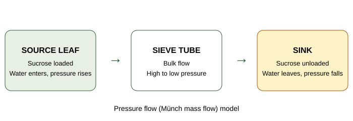
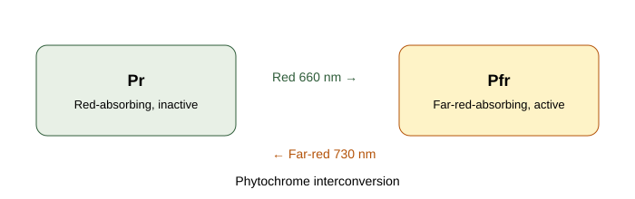

Image credits and how this site was built
This is a personal, non-commercial study site. No images are hotlinked. Every photograph or diagram file below was downloaded from Wikimedia Commons (53 images in total in this final version, up from 33) and stored in assets/images/, with its licence as listed by Wikimedia Commons at download time. Diagrams drawn in code for this site are labelled "Diagram" in their captions on the unit pages and are not photographs from any book or website.
Downloaded open images
- chloroplast.png — Chloroplast diagram, Wikimedia Commons, CC BY-SA 3.0.
- light-reaction.png — Light reaction diagram, Wikimedia Commons, CC BY-SA 4.0.
- light-reaction-flow.png — Light reaction, cyclic and linear flow, Wikimedia Commons, CC BY-SA 4.0.
- photosynthesis-overview.png — Photosynthesis overview, Wikimedia Commons, CC BY-SA 4.0.
- mitochondrion.png — Animal mitochondrion diagram, Wikimedia Commons, Public domain.
- stomata.jpg — Leaf epithelium, stomata and guard cells, Wikimedia Commons, CC BY 4.0.
- phloem-cucurbita.jpg — Herbaceous dicot stem, cambium and phloem in Cucurbita, Wikimedia Commons, CC0.
- root-nodules.jpg — Clover root nodules, Wikimedia Commons, CC BY-SA 4.0.
- phytochrome-pr-pfr.png — Phytochrome Pr/Pfr diagram, Wikimedia Commons, CC BY-SA 4.0.
- calvin-cycle.png — Overview of the Calvin Cycle, Wikimedia Commons, CC BY-SA 2.5.
- citric-acid-cycle.png — Citric acid cycle diagram, Wikimedia Commons, CC BY-SA 4.0.
- glycolysis.png — Glycolysis pathway, Wikimedia Commons, Attribution licence as listed by Commons.
- auxin-phototropism.jpg — Auxin phototropism, Wikimedia Commons, CC BY-SA 4.0.
- enzyme-active-site.png — Enzyme active site, Wikimedia Commons, CC BY-SA 3.0.
- guttation-hydathode.jpg — Guttation droplets on a crucifer leaf, Wikimedia Commons, CC0.
- mineral-deficiency-chlorosis.jpg — Mineral deficiency on Cinnamomum camphora, Wikimedia Commons, CC BY-SA 3.0.
- ion-channel-membrane.png — Ion channel receptor diagram, Wikimedia Commons, CC BY-SA 3.0.
- aquaporin-channel.jpg — Aquaporin channel structure, Wikimedia Commons, CC BY 3.0.
- girdling-bark.jpg — Girdled tree trunk, Wikimedia Commons, CC BY 3.0.
- phloem-sieve-tube.jpg — Phloem in gymnosperm leaves, Wikimedia Commons, CC0.
- pressure-flow-phloem.jpg — Aphids on a rose stem (stylet evidence for pressure flow), Wikimedia Commons, CC BY-SA 4.0.
- chlorophyll-absorption.png — Chlorophyll absorption spectrum, Wikimedia Commons, CC BY-SA 4.0.
- kranz-anatomy.png — C4 plant Kranz anatomy, Wikimedia Commons, CC BY-SA 4.0.
- c4-pathway.png — C4 pathway diagram, Wikimedia Commons, CC BY-SA 4.0.
- cam-plant.png — Kalanchoe pinnata, a CAM plant, Wikimedia Commons, public domain.
- electron-transport-chain.jpg — Mitochondrial electron transport chain, Wikimedia Commons, CC BY 4.0; converted here from the original GIF to a still JPEG to keep the file under 3 MB.
- glyoxylate-cycle.png — Glyoxylate cycle diagram, Wikimedia Commons, CC BY-SA 3.0.
- pentose-phosphate-pathway.png — Oxidative pentose phosphate pathway, Wikimedia Commons, public domain.
- enzyme-inhibition.png — Enzyme inhibitor diagram, Wikimedia Commons, CC BY-SA 4.0.
- gibberellin-structure.png — Gibberellin A12 structure, Wikimedia Commons, public domain.
- cytokinin-structures.png — Zeatin, kinetin and N6-isopentenyladenine structures, Wikimedia Commons, CC BY-SA 4.0.
- aba-plant.jpg — ABA signal cascade, Wikimedia Commons, CC BY-SA 4.0.
- ethylene-signalling.png — Ethylene signal transduction, Wikimedia Commons, CC BY-SA 3.0.
- water-potential.png — Water potential summary (Ψw = Ψs + Ψp), Wikimedia Commons, CC BY-SA 4.0.
- hydrogen-bonding-water.jpg — Hydrogen bonds between water molecules, Wikimedia Commons, public domain.
- simple-diffusion-en.svg — Simple diffusion across a cell membrane, Wikimedia Commons, public domain.
- facilitated-diffusion-en.svg — Facilitated diffusion through a membrane protein, Wikimedia Commons, public domain.
- passive-active-transport.svg — Passive versus active membrane transport, Wikimedia Commons, CC BY-SA 4.0.
- v-atpase.jpg — Structure of the V-ATPase proton pump, Wikimedia Commons, CC BY 4.0.
- abc-sav.jpg — Sav1866 ABC transporter structure, Wikimedia Commons, public domain.
- valinomycin-transport.png — Valinomycin ionophore transport, Wikimedia Commons, CC BY-SA 3.0.
- phloem-loading-pathways.png — Apoplastic and symplastic phloem loading pathways, Wikimedia Commons, CC BY-SA 4.0.
- sieve-tube.png — Sieve tube diagram, Wikimedia Commons, CC BY-SA 3.0.
- photorespiration-simplified.png — Simplified photorespiration diagram, Wikimedia Commons, CC BY-SA 3.0.
- enzyme-catalysis-energy.png — Enzyme catalysis energy profile (activation energy), Wikimedia Commons, CC BY-SA 3.0.
- gs-gogat.png — Glutamine synthetase and glutamate synthase (GS–GOGAT) diagram, Wikimedia Commons, CC BY-SA 3.0.
- photoperiodism-plants.jpg — Phytochrome cycle in leaves and long-day/short-day flowering, Wikimedia Commons, CC BY-SA 4.0.
- stoma-opening-closing.png — Stomatal opening and closing, Wikimedia Commons, CC BY-SA 3.0.
- chlorophyll-a-structure.png — Chlorophyll a structure, Wikimedia Commons, public domain.
- cyclic-photophosphorylation.png — Cyclic photophosphorylation, Wikimedia Commons, CC0.
- nitrogenase-scheme.png — Nitrogenase general catalytic scheme, Wikimedia Commons, CC BY-SA 3.0.
- z-scheme-fpls.png — Z-scheme of electron transport (Photosystem II to Photosystem I), Wikimedia Commons, CC BY 3.0.
- transpiration-overview.png — Overview of transpiration, Wikimedia Commons, CC BY-SA 3.0.
All other visuals on the unit pages are hand-coded SVG diagrams or HTML/CSS flowcharts made for this site, labelled "Diagram" in their captions. No AI-generated raster images were used, and no diagrams were copied from commercial textbooks or random websites.
Standalone diagrams drawn for this site


How the site was built
Static HTML, CSS and JavaScript only, with Tailwind-style minimal styling replaced by a plain-CSS fallback in assets/css/style.css so pages remain readable offline. Shared behaviour (answer reveal, quiz reveal, page search, toggle menu, redesigned back-to-top, localStorage checklist and progress) is in assets/js/main.js. The header uses a toggle menu on all screen sizes: primary links (Home, Units, Quiz Corner) stay visible, and the Menu button opens a panel with every section link; the circular back-to-top button appears only after scrolling 400px and rises near the bottom of the page so it does not cover footer or quiz buttons. The Dec 2025 paper on the PYQ page is a transcription of booklet NEE-3107-A supplied by the student; the five model papers are new questions written in the same pattern and are labelled as model papers. Content follows the BOT-DSM-511 syllabus supplied by the student and standard undergraduate plant physiology; where textbooks differ on ATP yields, the unit pages state the convention used.